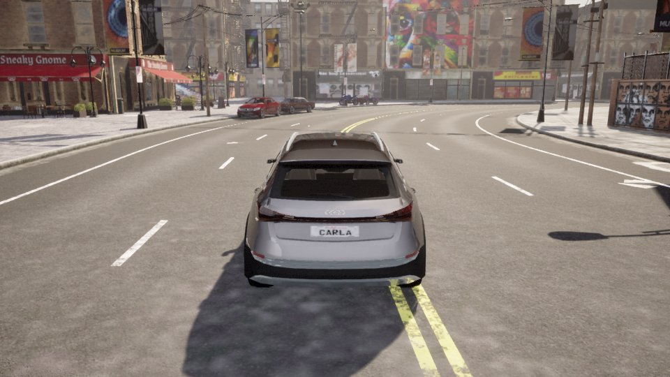
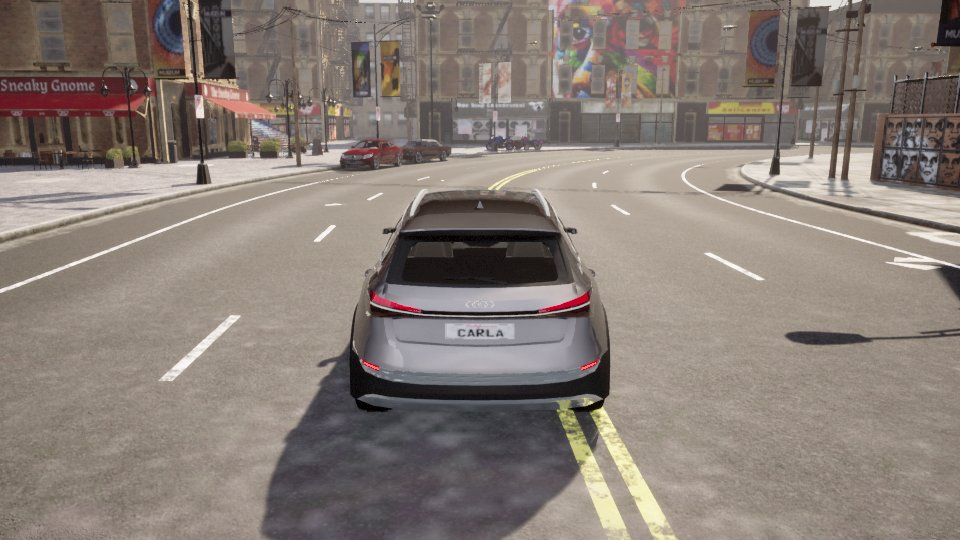
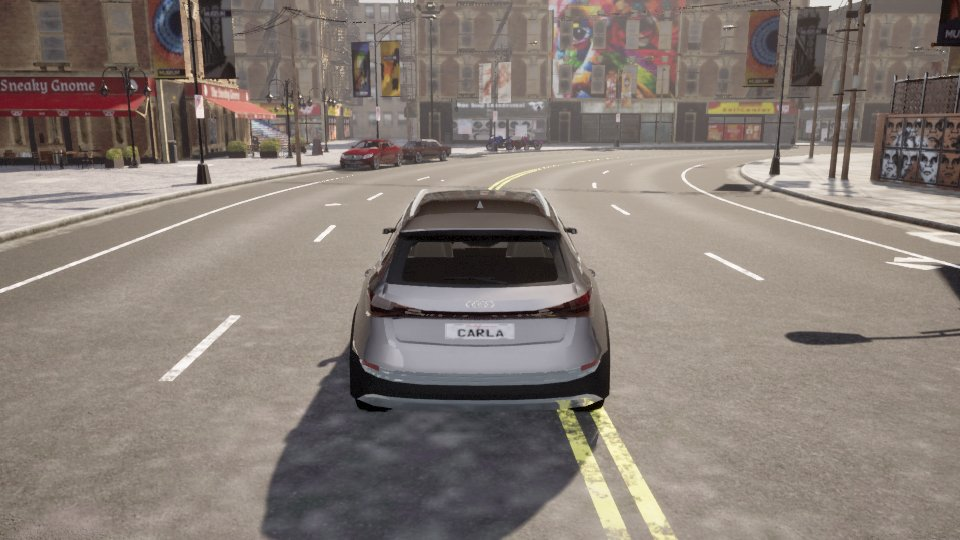

Overview
The host tests, coverage and static analysis are re-executed for every report. The hardware and X-Verse runs are recorded evidence, and the generator checks they were made with the current sources (passed).
SWE.1 Software requirements analysis
21 software requirements derived from 7 system requirements.
System requirements (input)
| ID | Title | Statement | Derived SWR |
|---|---|---|---|
| SYS-01 | Serial ECU connectivity | The X-COM layer shall connect ECUs that have no CAN transceiver to the X-Verse CAN bus in both directions, using a serial link. Example: the ThreadX ECU on the MXChip AZ3166. | SWR-001, SWR-002, SWR-003, SWR-004, SWR-005, SWR-006, SWR-007, SWR-008, SWR-032 |
| SYS-02 | Non-intrusive integration | The bridge shall integrate with X-Verse without modifying the baseline: the Zenoh2CAN bridge, the VCU, the virtual vehicle and CARLA. | SWR-011, SWR-012, SWR-032, SWR-033 |
| SYS-03 | Bus deployment options | The bridge shall support the standard X-Verse CAN bus (SocketCAN vcan0). It shall also support a CAN bus that needs no administrator rights on developer machines. | SWR-009, SWR-011 |
| SYS-04 | Robust operation | The bridge shall survive device unplug and replug, and transient serial or CAN errors, without a restart. A slow serial device shall never stall the CAN side. | SWR-003, SWR-007, SWR-010, SWR-020, SWR-021, SWR-022 |
| SYS-05 | Safe shutdown | When the bridge stops, it shall tell the connected ECUs, so they can enter their safe state. | SWR-023 |
| SYS-06 | Observability | The bridge shall report operational counters that are enough to diagnose connection, filtering and loss problems. | SWR-024 |
| SYS-07 | Timing | The bridge shall add little latency: an ECU round trip through the bridge shall stay within the timing budget of the X-Verse lighting use case (≤ 100 ms from VCU status to CARLA lamp state). | SWR-030, SWR-031 |
Software requirements
| ID | Requirement | Type | From | Planned | Criterion | Status |
|---|---|---|---|---|---|---|
| SWR-001 | Decode SLCAN frames The software shall decode device lines t/T/r/R (11/29-bit, data or remote) into CAN messages. It shall accept upper- and lower-case hex and an optional 4-digit timestamp. It shall reject lines whose length, DLC (> 8), identifier range or characters are invalid. | Functional | SYS-01 | UT | All 256 status bytes round-trip; 15 malformed lines rejected. | verified |
| SWR-002 | Encode SLCAN frames The software shall encode CAN messages as upper-case SLCAN lines terminated by CR. It shall refuse error frames, CAN FD frames, DLC > 8, out-of-range identifiers and data shorter than the DLC. | Functional | SYS-01 | UT | Exact encodings for standard, extended and remote frames; refusals raise SlcanError. | verified |
| SWR-003 | Tokenise the device stream The software shall split the device byte stream into CR-terminated lines and BELL tokens, regardless of read chunk boundaries. It shall ignore LF and discard lines longer than the longest frame line. No token shall be lost when a consumer stops between tokens. | Functional | SYS-01, SYS-04 | UT IT | Split chunks give identical tokens; overlong lines are reported once; the handshake forwards the frame that follows the open reply. | verified |
| SWR-004 | Device handshake On every connection the software shall send C, V, S<n> for the configured nominal bitrate, then O. It shall treat a missing acknowledgement of O as a connection failure. It shall forward frames the device sends during the handshake. | Interface | SYS-01 | IT | Simulated and physical ECUs receive C, V, S6, O in order; the ECU's state report after O reaches the bus. | verified |
| SWR-005 | Serial to CAN The software shall transmit every frame a device sends, if it passes that port's from_serial filter, on the configured CAN bus. | Functional | SYS-01 | IT QT | ECU frames appear on the bus; filtered IDs do not. | verified |
| SWR-006 | CAN to serial The software shall send every frame received from the CAN bus to each connected port whose to_serial filter accepts it. | Functional | SYS-01 | IT QT | Accepted IDs reach the ECU; filtered IDs do not. | verified |
| SWR-007 | Identifier filters Each port shall have independent to_serial and from_serial filters with entries id / mask / optional extended. A frame matches when (id & mask) == (filter_id & mask). An empty or missing list accepts all frames. The default mask is an exact 11- or 29-bit match. | Functional | SYS-01, SYS-04 | UT IT | Exact, masked, extended-only and empty filters behave as specified. | verified |
| SWR-008 | Serial-to-serial fan-out A frame from one serial port shall also be sent to every other port whose filter accepts it, as on a shared bus. It shall never return to its source port. | Functional | SYS-01 | IT | With two ECUs, a frame from A reaches B and the bus, but not A. | partially verified |
| SWR-009 | Echo suppression On buses that loop back their own frames (default: udp_multicast), the software shall drop exactly one received copy per frame it transmitted, within echo_window_s. | Functional | SYS-03 | UT IT QT | An ECU's own frame is not returned to it; frames from other nodes still are. | verified |
| SWR-010 | Unsupported frames The software shall not write error frames or CAN FD frames to serial ports. It shall ignore error frames received from the bus. | Robustness | SYS-04 | IT | FD and error frames never reach the ECU and are counted as filtered. | verified |
| SWR-011 | CAN bus selection The software shall open any python-can interface given in the configuration. For SocketCAN it shall omit the bitrate (configured by the OS). For udp_multicast it shall use classic frames. | Interface | SYS-02, SYS-03 | IT QT | Works on virtual and udp_multicast; SocketCAN vcan0 is exercised when available. | partially verified |
| SWR-012 | Configuration and command line The software shall:
| Interface | SYS-02 | UT | Shipped configs load; malformed overrides, empty port lists, duplicate names and bad bitrates are rejected. | verified |
| SWR-020 | Reconnection The software shall detect a lost device (read or write errors), mark the port offline, and retry every reconnect_s. It shall repeat the handshake on reconnection and resolve glob device paths at each attempt. Devices that cannot be opened shall be retried without affecting other ports. | Robustness | SYS-04 | IT | Unplug and replug, write failure and late-appearing devices all reconnect; a non-tty device does not block other ports. | verified |
| SWR-021 | Bounded, non-blocking queueing Each port shall have a bounded transmit queue. Frames for a full or offline port shall be dropped and counted. The CAN receive loop shall never block on a serial port. | Robustness | SYS-04 | UT IT | Queue-full and offline drops are counted; queued frames are discarded on disconnect. | verified |
| SWR-022 | CAN transmit errors A failed CAN transmission shall be counted and logged. Forwarding to other serial ports shall continue. | Robustness | SYS-04 | IT | With a failing bus, the error counter increases and the other ECU still receives the frame. | verified |
| SWR-023 | Safe shutdown On SIGINT or SIGTERM the software shall:
| Safety-related | SYS-05 | IT | Simulated and physical ECUs receive C; the AZ3166 reports lamps off afterwards. | verified |
| SWR-024 | Statistics The software shall log, every stats_interval_s and at shutdown, one JSON line with:
| Diagnostic | SYS-06 | IT | Counters match the traffic of the hardware check; a writer-detected loss counts one disconnect. | verified |
| SWR-030 | Round-trip time through the bridge With the AZ3166 at 115200 baud, the median CAN → ECU → CAN round trip through the bridge shall be ≤ 10 ms. | Performance | SYS-07 | IT | Hardware check median ≤ 10 ms over 256 frames. | verified |
| SWR-031 | End-to-end latency in X-Verse With the bridge in the path, the time from the VCU status publication to the matching CARLA lamp state shall be ≤ 100 ms. | Performance | SYS-07 | QT | Every live qualification step ≤ 100 ms. | verified |
| SWR-032 | X-Verse interoperability The software shall carry the X-Verse lighting traffic between the unmodified Zenoh2CAN bridge and the ECU, in the full run_autoverse.py environment. | Interface | SYS-01, SYS-02 | QT | Four lamp states, driven from Vehicle Manual Control, reach the CARLA actor. | verified |
| SWR-033 | Dependency alignment The software shall use the same python-can version as the X-Verse Zenoh2CAN bridge (4.2.2) and run on Python 3.10, the X-Verse interpreter. | Constraint | SYS-02 | AN | Pinned version equals the X-Verse lock; tests run on Python 3.10. | verified |
SWE.2 Software architectural design
9 elements, 7 interfaces, 8 design decisions. PlantUML is rendered locally.
Elements
| ID | Element | Responsibility | Satisfies |
|---|---|---|---|
| ARC-01 | SLCAN codec (slcan.py) | Encode and decode frame lines, tokenise the device stream | SWR-001, SWR-002, SWR-003, SWR-010 |
| ARC-02 | IdFilter | Per-direction id/mask/extended matching | SWR-007 |
| ARC-03 | EchoGuard | Cancel one looped-back copy per sent frame | SWR-009 |
| ARC-04 | SerialLink connection manager (reader thread) | Resolve device, open, handshake, read and dispatch tokens, detect loss, reconnect | SWR-003, SWR-004, SWR-005, SWR-020, SWR-024 |
| ARC-05 | SerialLink transmitter (queue and writer thread) | Filter, queue, encode and write frames; drop and count; close channel on exit | SWR-006, SWR-010, SWR-021, SWR-023 |
| ARC-06 | Serial2CanBridge core | Open the bus, forward serial → CAN, fan out, receive CAN → ports, statistics, shutdown | SWR-005, SWR-006, SWR-008, SWR-009, SWR-011, SWR-022, SWR-023, SWR-024, SWR-030, SWR-031, SWR-032 |
| ARC-07 | Configuration and CLI (load_config, main) | Load and validate JSON, apply --device overrides, logging, signals | SWR-012, SWR-023 |
| ARC-08 | Launcher (launch/bridge_launch.py) | Prepare vcan0 (sudo) when the config uses SocketCAN, then start the bridge | SWR-011 |
| ARC-09 | Dependency set (requirements*.txt) | Pin python-can 4.2.2, pyserial 3.5 and msgpack, as X-Verse does | SWR-033 |
Interfaces
| ID | Interface | Provider → consumer | Contract |
|---|---|---|---|
| IF-01 | SLCAN over serial | ECU ↔ ARC-04/05 | External. Lawicell lines, CR-terminated, 115200 8N1 by default |
| IF-02 | python-can Bus.send / recv | ARC-06 ↔ CAN bus | External. Classic frames; udp_multicast loops back own frames |
| IF-03 | JSON configuration | User → ARC-07 | External. can, serial_ports[], stats_interval_s, echo_window_s (README) |
| IF-04 | CLI and signals | User → ARC-07 | External. config, --device NAME=PATH, --log-level; SIGINT/SIGTERM stop |
| IF-05 | from_serial(source, message) | ARC-04 → ARC-06 | Internal. Called on the reader thread; non-blocking apart from bus.send |
| IF-06 | enqueue(message) | ARC-06 → ARC-05 | Internal. Never blocks; filtered, offline or queue-full outcomes are counted |
| IF-07 | Statistics log line | ARC-06 → operator | External. stats {json} every stats_interval_s and at shutdown |
Design decisions
| ID | Decision | Rationale |
|---|---|---|
| AD-01 | Lawicell SLCAN as the serial protocol | Readable, already spoken by the AZ3166 firmware, and supported by Linux slcand and python-can, so devices can also be used without this bridge. |
| AD-02 | python-can as the CAN abstraction | Same library and version as the X-Verse Zenoh2CAN bridge. One code path for SocketCAN, udp_multicast and virtual (SWR-011, SWR-033). |
| AD-03 | Two threads per port (reader, writer) plus the main CAN loop | A slow UART or a reconnect never blocks the CAN side or other ports (SWR-021). |
| AD-04 | Bounded per-port queues that drop and count | Back-pressure is visible in the statistics instead of growing memory or latency (SWR-021, SWR-024). |
| AD-05 | Serial-to-serial fan-out inside the bridge | The CAN interface does not deliver a sender's frames back to the same socket, so ECUs on different ports would not see each other otherwise (SWR-008). |
| AD-06 | Count-based echo guard, on by default only for udp_multicast | That bus loops back own frames; one cancellation per sent frame keeps identical frames from other nodes (SWR-009). |
| AD-07 | Reader thread owns the connection lifecycle; the writer only reports errors | One place opens, handshakes and closes, so there are no races on reconnect (SWR-020). |
| AD-08 | Close (C) to every ECU on shutdown | Lets ECUs fall back to their safe state (SWR-023). |
SWE.3 Software detailed design and unit construction
14 software units.
| ID | Unit | Source / functions | Element | Implements |
|---|---|---|---|---|
| DD-01 | Frame encoder | slcan.py: _check_encodable, encode | ARC-01 | SWR-002, SWR-010 |
| DD-02 | Frame decoder | slcan.py: decode | ARC-01 | SWR-001 |
| DD-03 | Stream tokeniser | slcan.py: LineSplitter.feed, tokens | ARC-01 | SWR-003 |
| DD-04 | Identifier filter | serial2can_bridge.py: IdFilter, _int | ARC-02 | SWR-007 |
| DD-05 | Echo guard | serial2can_bridge.py: EchoGuard.sent, is_echo, _signature | ARC-03 | SWR-009 |
| DD-06 | Connection lifecycle | SerialLink._read_loop, _open, _resolve_device, _serve, _end_session | ARC-04 | SWR-020, SWR-024 |
| DD-07 | Handshake | SerialLink._handshake, _command (pending-token queue) | ARC-04 | SWR-003, SWR-004 |
| DD-08 | Token handling | SerialLink._handle | ARC-04 | SWR-005, SWR-007, SWR-024 |
| DD-09 | Transmit path | SerialLink.enqueue, _write_loop, _drain_queue, close | ARC-05 | SWR-006, SWR-010, SWR-021, SWR-023 |
| DD-10 | Bus forwarding | Serial2CanBridge.__init__, from_serial | ARC-06 | SWR-005, SWR-008, SWR-009, SWR-011, SWR-022, SWR-030, SWR-031, SWR-032 |
| DD-11 | CAN receive and lifecycle | Serial2CanBridge.run, _dispatch, log_stats, shutdown | ARC-06 | SWR-006, SWR-010, SWR-023, SWR-024 |
| DD-12 | Configuration and CLI | load_config, main, request_stop | ARC-07 | SWR-012, SWR-023 |
| DD-13 | Launcher | launch/bridge_launch.py | ARC-08 | SWR-011 |
| DD-14 | Dependency pins | requirements.txt, requirements-dev.txt | ARC-09 | SWR-033 |
Coding guidelines
| ID | Rule | Check |
|---|---|---|
| CG-01 | Python 3.10 language level (the X-Verse interpreter); type annotations on all public functions | mypy (Python 3.10 mode), review |
| CG-02 | Ruff rule set E, F, W, B, UP, SIM, PL, RUF, C4, C90 with line length 120 (ruff.toml); tests may use literal protocol values | ruff |
| CG-03 | McCabe complexity ≤ 10 per function | ruff C901 (lizard reported as information, warning above 15) |
| CG-04 | No blocking calls on the CAN receive path; cross-thread hand-over only through bounded queues and events | Review |
| CG-05 | Catch only expected exceptions (SerialException, OSError, CanError, SlcanError); no bare except | ruff (E722, BLE via review) |
| CG-06 | Every thread is a daemon and is joined on shutdown; every resource (port, bus) is closed | Review, integration tests |
| CG-07 | Each error or drop path increments a named counter that is visible in the statistics | Review, integration tests |
SWE.4 Software unit verification
pytest: 302 passed in 6.24s.
Unit test cases
| ID | Test case | Unit | Verifies | pytest function | Result | Runs |
|---|---|---|---|---|---|---|
| UTC-01 | All 256 status bytes encode to a 22-byte line and decode to the same message | DD-01, DD-02 | SWR-001, SWR-002 | test_status_byte_round_trip | passed | 256 instance(s) |
| UTC-02 | Exact standard, 0-DLC, extended, remote and extended-remote encodings round-trip | DD-01, DD-02 | SWR-001, SWR-002 | test_encode_exact | passed | 5 instance(s) |
| UTC-03 | Lower-case hex and a 4-digit timestamp are accepted | DD-02 | SWR-001 | test_decode_accepts_lowercase_and_timestamp | passed | 1 instance(s) |
| UTC-04 | 15 malformed lines (length, DLC, range, characters, non-frames) raise SlcanError | DD-02 | SWR-001 | test_decode_rejects_malformed | passed | 15 instance(s) |
| UTC-05 | Out-of-range IDs, error frames and CAN FD frames are refused | DD-01 | SWR-002, SWR-010 | test_encode_rejects_unsupported | passed | 4 instance(s) |
| UTC-06 | Tokens split across chunks; BELL, bare OK, LF handling | DD-03 | SWR-003 | test_splitter_tokens_across_chunks | passed | 1 instance(s) |
| UTC-07 | Over-long lines are reported once and the stream recovers | DD-03 | SWR-003 | test_splitter_flags_overlong_lines | passed | 1 instance(s) |
| UTC-08 | Exact, masked, extended-only and empty filters | DD-04 | SWR-007 | test_id_filter | passed | 1 instance(s) |
| UTC-09 | Extended filter entries default to a 29-bit exact mask | DD-04 | SWR-007 | test_extended_filter_defaults_to_29_bit_mask | passed | 1 instance(s) |
| UTC-10 | One echo cancelled per send; expiry after the window; other payloads unaffected | DD-05 | SWR-009 | test_echo_guard_cancels_one_echo_per_send | passed | 1 instance(s) |
| UTC-11 | enqueue outcomes: filtered, offline, queued, queue full | DD-09 | SWR-021 | test_enqueue_decisions | passed | 1 instance(s) |
| UTC-12 | Port defaults; unsupported nominal bitrate rejected | DD-09, DD-12 | SWR-012 | test_link_defaults_and_validation | passed | 1 instance(s) |
| UTC-13 | --device overrides; malformed overrides and empty port lists rejected | DD-12 | SWR-012 | test_load_config_overrides_and_errors | passed | 1 instance(s) |
| UTC-14 | Duplicate port names rejected | DD-10 | SWR-012 | test_bridge_rejects_duplicate_port_names | passed | 1 instance(s) |
| UTC-15 | All shipped configurations load and validate | DD-12 | SWR-011, SWR-012 | test_shipped_configs_are_valid | passed | 3 instance(s) |
Structural coverage (host suite incl. CLI child process)
| File | Lines | Line % | Branches | Branch % |
|---|---|---|---|---|
| src/serial2can_bridge.py | 301/317 | 95.0% | 114/127 | 89.8% |
| src/slcan.py | 65/67 | 97.0% | 28/30 | 93.3% |
Details: coverage/index.html
Lint (ruff, CG-02): 0 findings
| Location | Rule | Message |
|---|---|---|
| — | — | No findings with the CG-02 rule set |
Types (mypy, Python 3.10): passed Success: no issues found in 2 source files
Complexity (lizard, information; 36 functions, max 11, average 4.3; gate is ruff C901 ≤ 10)
| File | Function | NLOC | CCN | Status |
|---|---|---|---|---|
| src/slcan.py | decode | 20 | 11 | ok |
| src/slcan.py | feed | 19 | 10 | ok |
| src/serial2can_bridge.py | _serve | 19 | 9 | ok |
| src/slcan.py | _check_encodable | 9 | 8 | ok |
| src/serial2can_bridge.py | _command | 15 | 8 | ok |
| src/serial2can_bridge.py | _handle | 18 | 7 | ok |
| src/serial2can_bridge.py | _write_loop | 22 | 7 | ok |
| src/serial2can_bridge.py | __init__ | 20 | 7 | ok |
SWE.5 Software integration and integration test
Host integration on pseudo-terminal ECUs (executed now), plus HW/SW integration with the physical AZ3166 (recorded 2026-10-06T19:20:07+0100).
| ID | Test case | Interfaces | Verifies | Kind | Result | Detail |
|---|---|---|---|---|---|---|
| ITC-01 | Handshake order C, V, S6, O; CAN→serial and serial→CAN with filters; ACK counting; C on shutdown | IF-01, IF-02, IF-05, IF-06 | SWR-003, SWR-004, SWR-005, SWR-006, SWR-007, SWR-023 | host (executed now) | passed | 0.52 s |
| ITC-02 | Two ECUs: fan-out between ports, not back to the source; extended and remote frames both ways | IF-01, IF-02, IF-05 | SWR-005, SWR-006, SWR-008 | host (executed now) | passed | 0.33 s |
| ITC-03 | Unplug: offline drops counted; replug: fresh handshake and traffic | IF-01 | SWR-020, SWR-021, SWR-024 | host (executed now) | passed | 0.61 s |
| ITC-04 | udp_multicast: an ECU's own frame is not looped back; other nodes' frames are delivered | IF-02 | SWR-009, SWR-011 | host (executed now) | passed | 0.64 s |
| ITC-05 | A non-tty device is retried without blocking others; a late device is found by glob | IF-01 | SWR-020 | host (executed now) | passed | 0.86 s |
| ITC-06 | Failing bus.send is counted and fan-out continues | IF-02, IF-05 | SWR-022 | host (executed now) | passed | 0.36 s |
| ITC-07 | Serial write failure: one disconnect counted, reconnect with handshake, traffic resumes | IF-01, IF-06 | SWR-020, SWR-024 | host (executed now) | passed | 0.58 s |
| ITC-08 | FD frames are not written; bus error frames are ignored | IF-02, IF-06 | SWR-010 | host (executed now) | passed | 0.50 s |
| ITC-09 | CLI process: --device override, periodic stats, SIGTERM → C and exit 0 | IF-03, IF-04, IF-07 | SWR-012, SWR-023, SWR-024 | host (executed now) | passed | 0.97 s |
| ITC-10 | AZ3166: the state report after open reaches the bus | IF-01, IF-02 | SWR-003, SWR-004, SWR-005 | on target (recorded) | passed | {} |
| ITC-11 | AZ3166: all 256 status bytes through bridge and ECU; median round trip ≤ 10 ms | IF-01, IF-02 | SWR-005, SWR-006, SWR-030 | on target (recorded) | passed | {"round_trip_ms": {"median": 4.9, "p95": 5.69, "max": 6.15}} |
| ITC-12 | AZ3166: 1 s diagnostic heartbeat forwarded | IF-01, IF-02 | SWR-005 | on target (recorded) | passed | {"intervals_s": [0.994, 0.995, 0.993]} |
| ITC-13 | AZ3166: a filtered ID does not reach the ECU | IF-06 | SWR-007 | on target (recorded) | passed | {} |
| ITC-14 | AZ3166: SIGTERM sends C to the ECU | IF-04 | SWR-023 | on target (recorded) | passed | {} |
| ITC-15 | AZ3166: the ECU reports lamps off after the bridge stops | IF-01 | SWR-023 | on target (recorded) | passed | {} |
SWE.6 Software qualification test
Live X-Verse (run_autoverse.py --enable-camera-display --vcu-zenoh, CARLA 0.9.15) with Serial2CAN in the path, recorded 2026-10-06T19:20:24+0100.
| ID | Test case | Method | Verifies | Result | Detail |
|---|---|---|---|---|---|
| QTC-01 | Brake pressed → CARLA brake lamp (8) via VCU, Zenoh2CAN, Serial2CAN and the ECU | Test | SWR-005, SWR-006, SWR-009, SWR-032 | passed | mask 8, key→VCU 28.7 ms, key→CARLA 77.7 ms |
| QTC-02 | Brake released → lamps off (0) | Test | SWR-005, SWR-006, SWR-032 | passed | mask 0, key→VCU 21.0 ms, key→CARLA 79.8 ms |
| QTC-03 | Reverse engaged → reverse lamp (64) | Test | SWR-005, SWR-006, SWR-032 | passed | mask 64, key→VCU 142.0 ms, key→CARLA 189.6 ms |
| QTC-04 | Brake in reverse → both lamps (72) | Test | SWR-005, SWR-006, SWR-032 | passed | mask 72, key→VCU 21.3 ms, key→CARLA 74.1 ms |
| QTC-05 | Brake released in reverse → reverse lamp (64) | Test | SWR-005, SWR-006, SWR-032 | passed | mask 64, key→VCU 21.3 ms, key→CARLA 33.9 ms |
| QTC-06 | Reverse disengaged → lamps off (0) | Test | SWR-005, SWR-006, SWR-032 | passed | mask 0, key→VCU 142.6 ms, key→CARLA 169.3 ms |
| QTC-07 | Every step: (key → CARLA lamp) − (key → VCU status) ≤ 100 ms | Test | SWR-031 | passed | VCU → CARLA lamp [49.0, 58.8, 47.6, 52.8, 12.6, 26.7] ms (max 58.8) |
| QTC-08 | The live run used udp_multicast with echo suppression and no transmit errors | Analysis | SWR-009, SWR-011 | passed | bus counters {'can_rx': 8, 'can_tx': 401, 'echo_suppressed': 401, 'can_tx_errors': 0} |
| QTC-09 | Evidence was recorded with the current serial2can_bridge.py, slcan.py and configuration | Analysis | SWR-032 | passed | serial2can_bridge.py =, slcan.py =, az3166-udp-multicast.json = |
| QTC-10 | python-can pin equals the X-Verse lock (ThreadX/dependencies.lock.json); tests run on Python 3.10 | Analysis | SWR-033 | passed | python-can 4.2.2 (X-Verse lock 4.2.2); report Python 3.10.12 |
| QTC-11 | SocketCAN vcan0 deployment (needs root to create the interface) | Test | SWR-011 | not run | Environment not available here |
| QTC-12 | Two physical serial ECUs on one bus (the S32K148 OpenBSW firmware lacks SLCAN) | Test | SWR-008 | not run | Environment not available here |
CARLA rear-camera frames



Bidirectional traceability
SYS → SWR → element → unit → verification cases.
| SWR | SYS | ARC | DD | UT | IT | QT | AN | RV | Status |
|---|---|---|---|---|---|---|---|---|---|
| SWR-001 | SYS-01 | ARC-01 | DD-02 | UTC-01 UTC-02 UTC-03 UTC-04 | — | — | — | — | verified |
| SWR-002 | SYS-01 | ARC-01 | DD-01 | UTC-01 UTC-02 UTC-05 | — | — | — | — | verified |
| SWR-003 | SYS-01, SYS-04 | ARC-01, ARC-04 | DD-03, DD-07 | UTC-06 UTC-07 | ITC-01 ITC-10 | — | — | — | verified |
| SWR-004 | SYS-01 | ARC-04 | DD-07 | — | ITC-01 ITC-10 | — | — | — | verified |
| SWR-005 | SYS-01 | ARC-04, ARC-06 | DD-08, DD-10 | — | ITC-01 ITC-02 ITC-10 ITC-11 ITC-12 | QTC-01 QTC-02 QTC-03 QTC-04 QTC-05 QTC-06 | — | — | verified |
| SWR-006 | SYS-01 | ARC-05, ARC-06 | DD-09, DD-11 | — | ITC-01 ITC-02 ITC-11 | QTC-01 QTC-02 QTC-03 QTC-04 QTC-05 QTC-06 | — | — | verified |
| SWR-007 | SYS-01, SYS-04 | ARC-02 | DD-04, DD-08 | UTC-08 UTC-09 | ITC-01 ITC-13 | — | — | — | verified |
| SWR-008 | SYS-01 | ARC-06 | DD-10 | — | ITC-02 | QTC-12 | — | — | partially verified |
| SWR-009 | SYS-03 | ARC-03, ARC-06 | DD-05, DD-10 | UTC-10 | ITC-04 | QTC-01 | QTC-08 | — | verified |
| SWR-010 | SYS-04 | ARC-01, ARC-05 | DD-01, DD-09, DD-11 | UTC-05 | ITC-08 | — | — | — | verified |
| SWR-011 | SYS-02, SYS-03 | ARC-06, ARC-08 | DD-10, DD-13 | UTC-15 | ITC-04 | QTC-11 | QTC-08 | — | partially verified |
| SWR-012 | SYS-02 | ARC-07 | DD-12 | UTC-12 UTC-13 UTC-14 UTC-15 | ITC-09 | — | — | — | verified |
| SWR-020 | SYS-04 | ARC-04 | DD-06 | — | ITC-03 ITC-05 ITC-07 | — | — | — | verified |
| SWR-021 | SYS-04 | ARC-05 | DD-09 | UTC-11 | ITC-03 | — | — | — | verified |
| SWR-022 | SYS-04 | ARC-06 | DD-10 | — | ITC-06 | — | — | — | verified |
| SWR-023 | SYS-05 | ARC-05, ARC-06, ARC-07 | DD-09, DD-11, DD-12 | — | ITC-01 ITC-09 ITC-14 ITC-15 | — | — | — | verified |
| SWR-024 | SYS-06 | ARC-04, ARC-06 | DD-06, DD-08, DD-11 | — | ITC-03 ITC-07 ITC-09 | — | — | — | verified |
| SWR-030 | SYS-07 | ARC-06 | DD-10 | — | ITC-11 | — | — | — | verified |
| SWR-031 | SYS-07 | ARC-06 | DD-10 | — | — | QTC-07 | — | — | verified |
| SWR-032 | SYS-01, SYS-02 | ARC-06 | DD-10 | — | — | QTC-01 QTC-02 QTC-03 QTC-04 QTC-05 QTC-06 | QTC-09 | — | verified |
| SWR-033 | SYS-02 | ARC-09 | DD-14 | — | — | — | QTC-10 | — | verified |
Gaps and consistency issues
Requirements not fully verified (2)
- SWR-008 Serial-to-serial fan-out: partially verified
- SWR-011 CAN bus selection: partially verified (missing QT)
Traceability consistency (0 issues)
- None: every SYS has derived SWR; every SWR is allocated, implemented and verified by traced cases; every pytest function is traced.
Evidence index and tools
| Process | Work product | Content |
|---|---|---|
| SWE.1 | aspice/swe1-requirements/software-requirements.md | Software requirements (input: system-requirements.md) |
| SWE.2 | aspice/swe2-architecture/architecture.md | Architecture, decisions, elements, interfaces |
| SWE.3 | aspice/swe3-detailed-design/detailed-design.md | Units, design notes |
| SWE.3 | aspice/swe3-detailed-design/coding-guidelines.md | Coding guidelines |
| SWE.4 | aspice/swe4-unit-verification/unit-verification.md | Unit verification strategy and cases |
| SWE.5 | aspice/swe5-integration-test/integration-test.md | Integration strategy and cases |
| SWE.5 | evidence/hardware-check/results.json | AZ3166 hardware integration run |
| SWE.6 | aspice/swe6-qualification-test/qualification-test.md | Qualification strategy and cases |
| SWE.6 | evidence/xverse-carla/results.json | Live X-Verse + CARLA run |
| All | evidence/manifest.json | Source hashes of the recorded evidence |
| SWE.4 | coverage/index.html · ruff.json · mypy.txt · complexity.csv · pytest-junit.xml | Tool outputs of this generation |
| All | summary.json | Machine-readable summary |
Tool versions
| Tool | Version |
|---|---|
| Python | Python 3.10.12 |
| pytest | pytest 8.3.5 |
| coverage.py | Coverage.py, version 7.6.1 with C extension |
| ruff | ruff 0.6.9 |
| mypy | mypy 1.11.2 (compiled: yes) |
| lizard | lizard 1.17.10 |
| python-can | 4.2.2 |
| PlantUML | 1.2024.7 (sha1 cb57b315d964) |